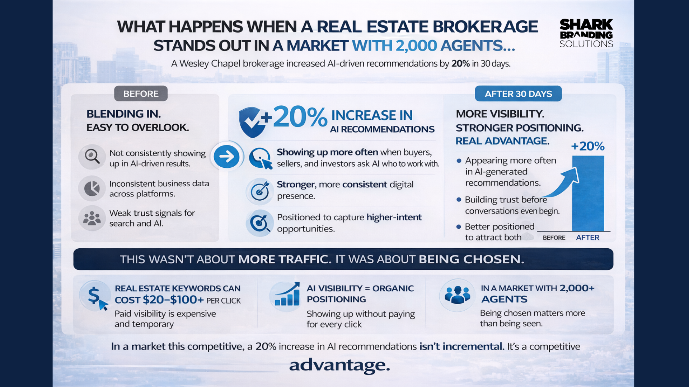

In a market crowded with nearly 2,000 agents, Emory's Rock Realty used cleaner data, stronger AI visibility signals, and Chamber-connected authority to increase recommendation frequency in 30 days.
A Wesley Chapel brokerage serving residential and commercial clients in a market where AI recommends only a small handful of options—and where local authority clusters determine who gets chosen first.
Before the cleanup, inconsistent details created confusion. After, the same brokerage looked more coherent, more trusted, and easier for AI to confidently reference.
Inconsistent NAP data weakened AI confidence. The brokerage looked like multiple fragmented entities instead of one trusted source.
Visibility existed but wasn't strong enough to reliably convert into recommendations—the brokerage was easy to overlook at the moment of decision.
Standardized NAP across the site, Google Business Profile, and Chamber references made the brokerage easier for AI systems to verify, match, and cite.
Unified name, address, and phone data across every platform AI relies on—reducing entity friction and eliminating conflicting references that caused AI to skip the business.
Added stronger contextual depth around services, trust, and relevance—creating more hooks for buyer, seller, investor, and new-construction queries across generative search.
Connected the brokerage to a trusted local authority hub. The Chamber-as-hub, brokerage-as-spoke pattern strengthened credibility in the exact area where buyer signals were concentrated.
Improved location confidence for local recommendation queries—making it easier to surface the brokerage for nearby, high-intent searches in the 1.25-mile radius around the Chamber.
When listings use conflicting address details, AI systems split confidence across multiple versions of the same business. Unifying the NAP made Emory's Rock Realty look like one consistent entity instead of a fragmented set of references.
Once the website, Chamber profile, and supporting references aligned, generative engines had a cleaner basis for recommending the brokerage during high-trust, decision-making moments.
The North Tampa Bay Chamber functioned like a local hub and Emory's Rock Realty functioned like a spoke connected to that hub. Once the brokerage's data and local authority signals were aligned, AI had a clearer relationship map to work from.
For the query "Best Realtors in Wesley Chapel," Emory's Rock Realty moved from #4 to #1 within the 1.25-mile area around the North Tampa Bay Chamber—showing how proximity, entity trust, and authority alignment compound when the signals are clean.
A 20% increase is not just a visibility gain. AI recommends a small handful of brokerages—not dozens. That means this was a selection gain.
Showing up in more AI-generated recommendations
Entering more buyer and seller shortlists
Building trust before a conversation even starts
Moved from #4 to #1 in the 1.25-mile Chamber radius

If your business needs cleaner local signals, stronger entity confidence, and better AI visibility, Shark Branding Solutions can help you tighten the footprint and improve how your brand gets interpreted.